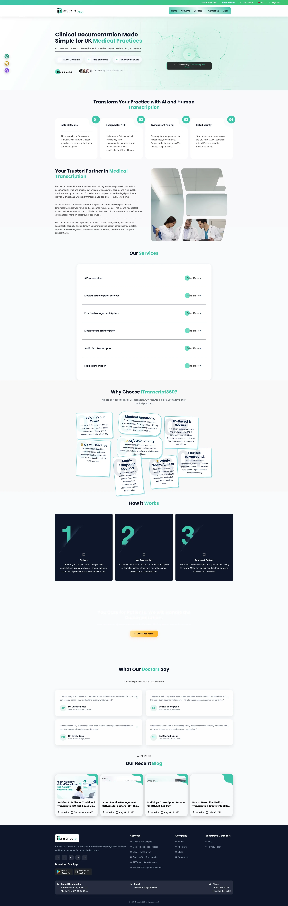
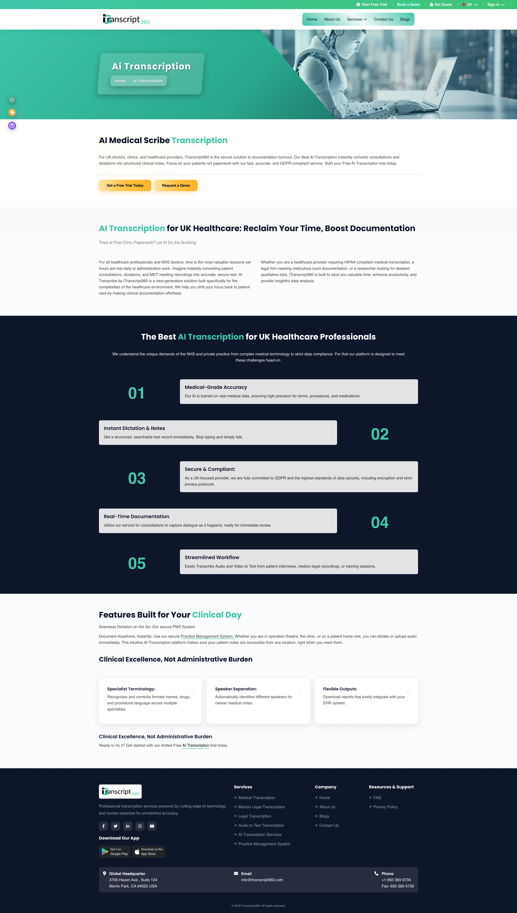
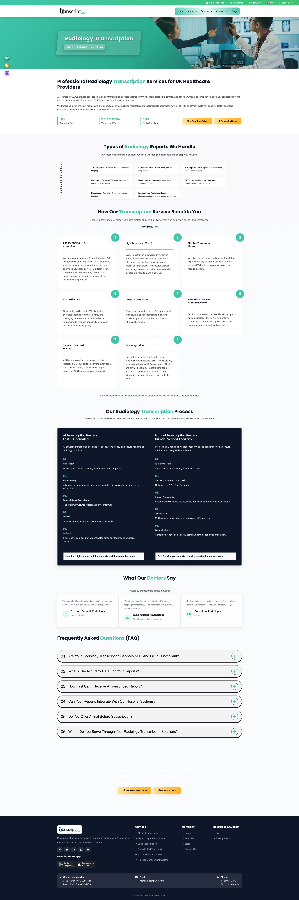
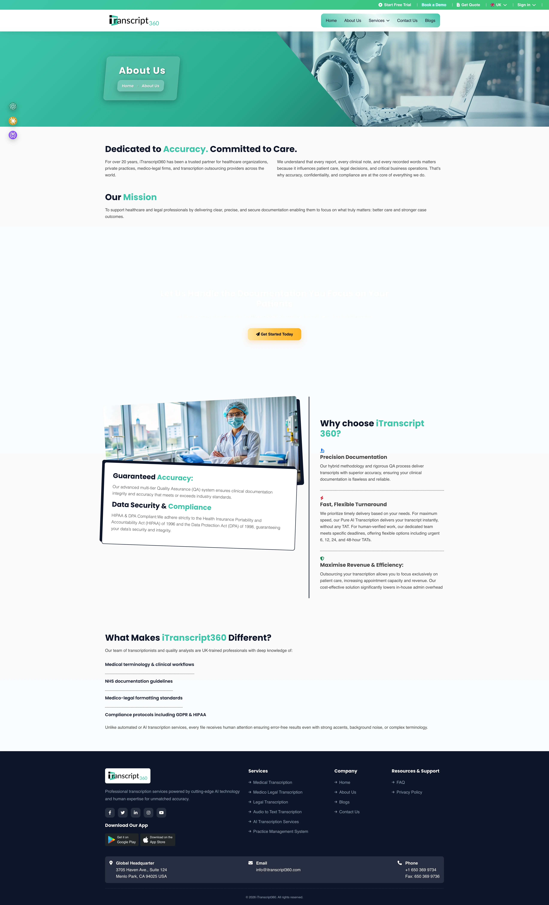
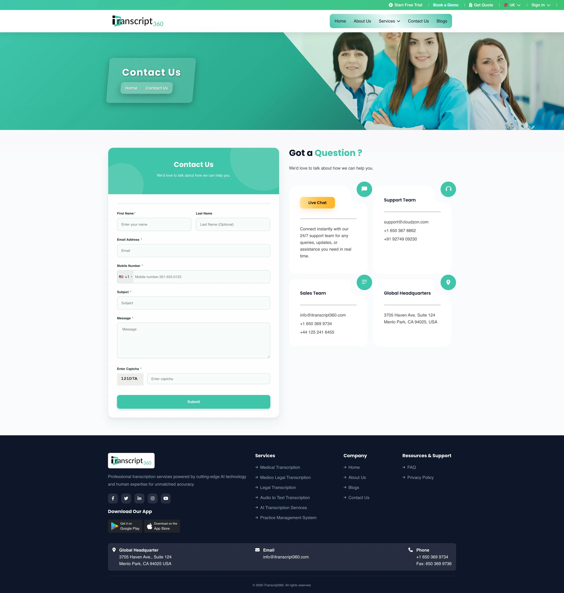

Architecting a localized healthcare web platform tailored to UK general practices, acute hospital trusts, and private clinics — integrating with British primary care EHRs, enforcing UK sovereign data residency, and adapting medical transcription workflows to British clinical terminology.

Designed for seamless ingestion into EMIS Web and SystmOne (TPP) to eliminate manual clerical copy-pasting for practice staff.
Instant speech AI draft generated in 60 seconds, or specialist human quality-assurance completed within 6 hours.
Strict zero offshore transfer boundary. Voice files and clinical notes reside securely in AWS London (eu-west-2).
Trained on the British National Formulary (BNF), UK drug dosages, and multi-regional British speech dialects.
While the first edition of iTranscript360 was built primarily around US commercial billing and international healthcare protocols, the United Kingdom healthcare landscape operates on fundamentally distinct clinical, regulatory, and technological foundations. Designing a localized UK experience required building deep architectural respect for the National Health Service (NHS).
As the Lead UI/UX Designer and Frontend Developer, my responsibilities encompassed the entire digital presentation layer: establishing the regional design system in Figma, architecting responsive layouts in semantic HTML5/CSS3, and engineering interactive frontend demonstrations:
To make speech intelligence tangible for prospective NHS clinical directors and practice managers, the website features an interactive clinical HUD that cycles through authentic British medical consultation scenarios in real time.
Prospective practice managers can also trigger automated prompt launchers for ChatGPT, Claude, or Perplexity to evaluate transcription onboarding protocols.
The core technical differentiator for the UK edition is its alignment with British GP software. Over 95% of UK general practices rely on either EMIS Web or SystmOne (TPP). The end-to-end documentation pathway was designed to bridge mobile recording and native EHR consultation records:
GPs and hospital consultants dictate using an iOS/Android smartphone app, dedicated Olympus digital dictaphone, or encrypted web portal.
Audio is processed through speech AI calibrated for British accents, with optional high-precision QA verification by certified UK transcriptionists.
Structured into standardized RCGP outpatient consultation letters, SOAP clinical summaries, or acute referral packages with BNF drug verification.
Final approved notes stream into patient electronic journals in EMIS Web or SystmOne, eliminating clerical copy-pasting for practice managers.
Every medical specialty in the UK operates under specific documentation standards and regulatory expectations. The UK platform is organized into 6 dedicated service lines pairing high-speed speech AI with certified UK-trained medical transcription specialists:
Instant consultation summaries, outpatient letters, and referral packages formatted strictly to Royal College of General Practitioners (RCGP) standards. Dictations stream directly into EMIS Web and SystmOne patient journals.


Powered by clinical speech models trained on British medical audio. Delivers structured SOAP encounter notes rapidly while accommodating regional speech variations.
High-velocity report generation for NHS hospital diagnostic imaging departments, acute trusts, and private scanning centres, alleviating reporting backlogs.


Clinical documentation for consultant cardiologists, heart clinics, and catheterisation labs. Translating complex hemodynamics, echocardiography measurements, and Holter monitors into formatted letters.
Verbatim medical transcription for expert witness reports, personal injury litigation, clinical negligence claims, and General Medical Council (GMC) tribunal hearings across England, Wales, and Scotland.


Documentation for specialist eye hospitals, refractive clinics, and cataract surgical units. Precision transcription of OCT scans, fundus photography notes, intraocular pressures, and surgical operative records.
All 9 verified production captures from the live UK platform (uk.itranscript360.com). Each interface was designed to build institutional trust with NHS decision-makers, highlight British compliance, and convert practice managers:
Hero section featuring NHS trust badges, healthcare social proof, and multi-LLM launch buttons.
Comprehensive GP surgery transcription, RCGP outpatient letter formatting, and EMIS Web syncing.
AI clinical scribe engine details, British accent processing, and automated SOAP formatting.
CT, MRI, ultrasound, and X-ray dictation workflow for hospital scanning departments.
Echocardiography measurements, cath lab records, and multidisciplinary heart team findings.
CPR 35 compliant expert witness reports, GMC tribunal hearings, and personal injury depositions.
OCT scan notes, fundus findings, cataract surgical operations, and post-op clinic letters.

Company background, dual medical transcriptionist qualifications, and client care ethos.

Integrated 30-minute practice consultation booking modal, quote calculator, and trial signups.
In the United Kingdom, medical patient records are classified as special category data under the Data Protection Act 2018. To support procurement confidence across NHS Integrated Care Systems (ICS), the platform was engineered to satisfy strict security benchmarks:
Zero offshore transfer boundary. Audio recordings, transcript drafts, and patient identifiers strictly reside on UK AWS data centres (London eu-west-2).
Aligned with the NHS Data Security and Protection Toolkit, addressing Caldicott Principles 1 through 7 for patient privacy and data handling.
Standard AES-256 encryption for all stored voice files and documents at rest, with TLS 1.3 cryptographic protection in transit.
Registered with the UK Information Commissioner's Office (ICO) under the Data Protection Act 2018 with routine security auditing.
To establish immediate institutional trust, the typography pairs Bricolage Grotesque for confident display headlines with Plus Jakarta Sans and Inter for clear, highly legible clinical data tables and prose:
Adapting an international healthcare product for the UK market yielded important insights regarding clinical trust, legacy NHS infrastructure, and the balance between automated AI and human QA:
UK healthcare decision-makers are inherently skeptical of Silicon Valley-style hyperbole. Adopting restrained typography, muted blues, explicit compliance signifiers (DSPT, Caldicott, ICO), and direct primary care workflow diagrams proved far more persuasive than flashy animations.
While pure speech AI is fast, British consultants dealing with complex oncology, surgical, or medico-legal documentation require absolute precision. Highlighting the 6-hour human QA turnaround alongside instant 60-second AI drafts established genuine clinical credibility.
Standard US speech models routinely fail when processing Scottish, Welsh, or Northern Irish clinical dictations. Explicitly communicating accent normalization and British National Formulary drug mapping directly resolved a major pain point for NHS trust procurement teams.